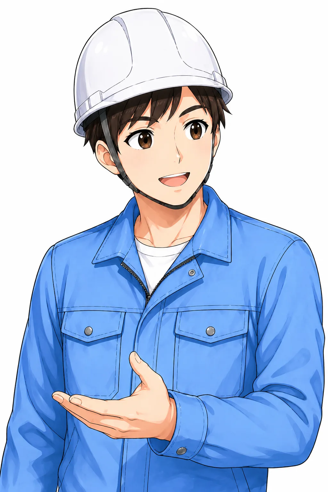
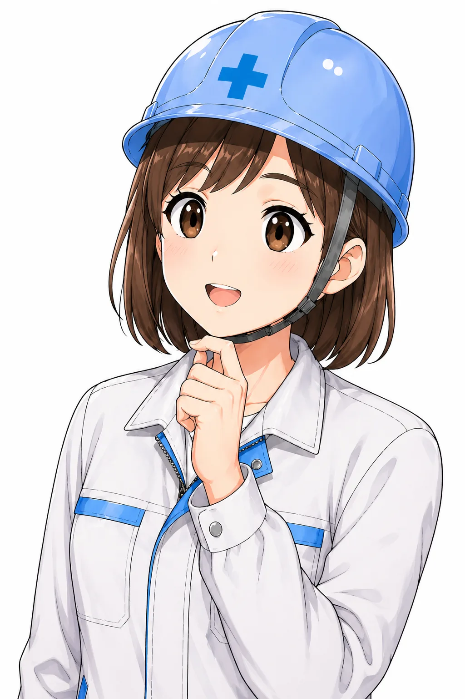
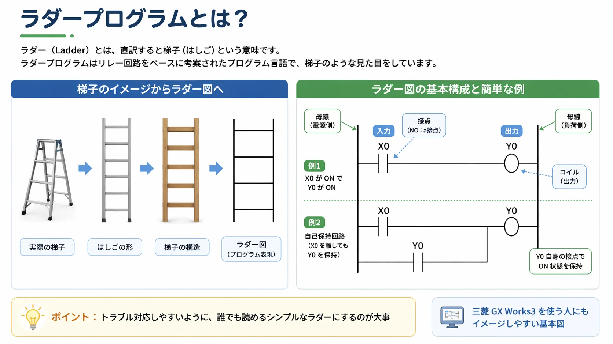
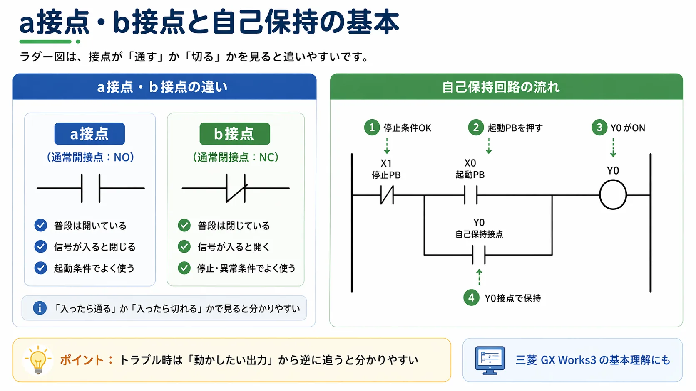

1. 先に結論
ラダー図は、左から右へ「条件が通るか」を見るのが基本です。 まずは 入力（押しボタン・センサ）→ 条件（接点）→ 出力（ランプ・リレー・電磁弁） の流れで追うと分かりやすくなります。
最初から難しい命令を追うより、どの入力で、何がONして、何が動くのか を一つずつ見る方が現場では役立ちます。
ラダー図は「条件がそろったら右側が動く」で見る
ラダー図をいきなり全部読もうとすると難しく感じます。 まずは1段ずつ、左側の条件が成立しているか、その結果として右側の出力が動くかを見るだけでも十分です。

先輩ラダー図は、最初から全部を理解しようとしなくていいよ。まずは左から右へ、条件が通るかを1段ずつ見れば大丈夫。

新人入力、条件、出力の流れで見れば、どこから追えばいいか分かりやすくなりそうです。
2. まずは「左から右へ流れを見る」と追いやすいです
ラダー図は、見た目が少し独特ですが、考え方はそこまで複雑ではありません。 基本は左側に条件、右側に結果があります。
たとえば、押しボタンが押された、センサが入った、停止条件が解除されている、といった条件が左側でそろうと、 右側にある出力コイルがONします。 この「条件が通ったら、右側が動く」という見方が基本です。
入力を見る
まずはどのスイッチ、センサ、信号が入ると回路が動くのかを見ます。
条件を見る
途中にある接点がON条件なのか、OFF条件なのかを確認します。
出力を見る
右側にあるコイルや出力で、何が動くのかを見ます。
流れで追う
1個ずつ部品を覚えるより、どの順で動くかを流れで見る方が追いやすいです。

横一段ごとに意味があると思うと見やすい
ラダー図は「はしご」っぽい見た目ですが、実際は横一段ごとに意味があります。 1段の中で、左から条件を見ていき、最後に右側のコイルや出力がONするかどうかを見る、という感じです。
3. a接点・b接点は「普段どうなっているか」で見ると分かりやすいです
ラダー図を見始めると、最初に出てきやすいのがa接点とb接点です。 ここはつまずきやすいですが、普段の状態で開いているか、閉じているかで考えると整理しやすいです。
| 種類 | 普段の状態 | 入力が入った時 | 見方のコツ |
|---|---|---|---|
| a接点 | 開いている | 閉じる | 条件が成立したら通るイメージです。 |
| b接点 | 閉じている | 開く | 条件が成立したら止める・切るイメージです。 |
a接点は「入ったら通る」
a接点は、通常時は開いていて、対象の信号がONすると通る接点です。 押しボタン、起動条件、運転許可などでよく出てきます。
b接点は「入ったら切れる」
b接点は、通常時は閉じていて、対象の信号がONすると切れる接点です。 停止条件、異常条件、インターロックなどでよく使います。
記号だけで覚えようとすると混乱しやすい
初心者のうちは、a接点・b接点を記号だけで覚えようとすると混乱しやすいです。 「この条件が入ると通すのか、切るのか」で見た方が追いやすいです。
4. 自己保持は「一度入ったら自分でつなぎ続ける」と考えると見やすいです
制御回路でよく出てくるのが自己保持です。 これは、スタート信号が一瞬でも入ったら、その後は自分の接点で回路をつなぎ続ける形です。
モータ運転、ポンプ運転、設備スタートなどでよく見ます。 ラダー図を読み慣れていない時でも、自己保持が分かるとかなり見やすくなります。

自己保持を読む時の流れ
- 停止条件が解除されているかを見る
- 起動ボタンが入ると出力がONする
- 出力がONすると、自分の接点でも通るようになる
- 起動ボタンを離しても、回路が保持される
- 停止ボタンや異常条件で切れると止まる
自己保持は「起動ボタンを押しっぱなしにしなくても動き続けるための回路」
最初のきっかけは起動ボタンですが、その後は出力が自分で自分の回路をつなぐイメージです。 ここが見えると、設備の運転回路をかなり追いやすくなります。
5. トラブル時は「動かない出力」から逆に追うと見やすいです
現場でラダー図を見る場面は、新規作成よりも「なんで動かないのか」「どこで止まっているのか」を確認する時が多いと思います。 そういう時は、最初から全部を読むより、動いてほしい出力から逆に追うと分かりやすいです。
1. まず出力を決める
モータが回らないなら、そのモータを動かす出力やリレーを見ます。
2. 出力の手前を見る
その出力の手前で、どの接点が通っていないのかを確認します。
3. 停止・異常条件を見る
b接点で止まっていることも多いので、ここを見落とさないようにします。
4. 実機信号と照らす
図面上だけでなく、押しボタン、センサ、ランプの実際の状態と合わせて見ます。
GX Works3のモニタと実機を合わせて見る
ラダー図だけ見て悩むより、GX Works3のモニタで実際のON/OFFを見ながら追うとかなり分かりやすいです。 どの条件が入っていて、どこで止まっているかを順番に見ます。
「読みにくいラダー」より「追いやすいラダー」が大事です
制御は難しく見せようと思えばいくらでも難しくできますが、設備トラブル時に後から見た人が追えないと困ります。 現場では、凝った書き方よりも、誰が見ても流れが追いやすいことの方が大事です。
コメントが入っている、条件のまとまりが分かりやすい、自己保持や停止条件が見つけやすい、というだけでもかなり変わります。 この記事もその温度感で整理しています。
新人動かない時は、最初から全部読むより、動かしたい出力から戻って見る方がいいんですね。
先輩そうだね。出力の手前でどの条件が切れているかを見れば、原因をかなり絞りやすいよ。
6. 最初はこの4つを押さえるとかなり読みやすくなります
- 左から右へ見て、条件が通るかを追う
- a接点は入ったら通る、b接点は入ったら切れるで見る
- 入力 → 条件 → 出力の流れで読む
- トラブル時は出力から逆に追う
この4つだけでも、ラダー図の苦手意識はかなり減ります。 まずは1段ずつ落ち着いて追えるようになるだけで十分です。
7. ラダー図の読み方でよくある疑問
Q. ラダー図は全部暗記しないと読めませんか？
最初から全部覚える必要はありません。 まずは入力、接点、出力の流れが追えればかなり読みやすくなります。
Q. a接点とb接点が毎回こんがらがります
記号だけで覚えようとせず、「信号が入ったら通すのか、切るのか」で見ると整理しやすいです。
Q. 現場でラダー図を見る時、どこから見ればいいですか？
動かしたい機器に関係する出力から見て、その手前の条件を逆に追うと分かりやすいです。
8. まとめ
ラダー図は、左から右へ条件が通るかを見て、右側の出力が動くかを確認する図です。 最初から難しい命令を追うより、入力、条件、出力の流れを1段ずつ見ると理解しやすくなります。
- ラダー図は左から右へ条件を追う
- a接点は入ったら通る、b接点は入ったら切れる
- 自己保持は、一度入ったら自分の接点でつなぎ続ける回路
- トラブル時は、動かない出力から逆に追うと原因を探しやすい
この記事は役に立ちましたか？
今後の記事づくりの参考にします。どちらかを選ぶだけで回答できます。
回答は匿名で集計し、個人情報の入力はありません。
あわせて読みたい記事
ラダー図の読み方が少し見えてきたら、入力と出力、自己保持、インターロック、PLCの全体像へ広げると理解しやすいです。